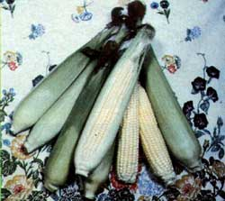
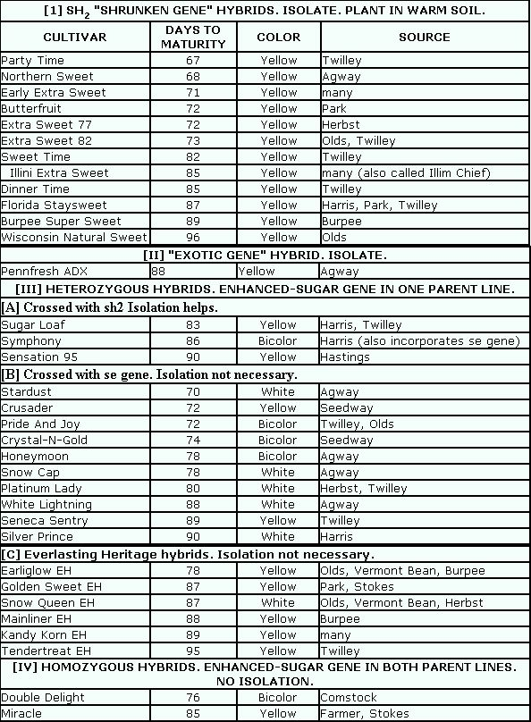

The Seasons Of The Garden
March/April 1983
Spring's bright march steals northward, with shining columns of nodding yellow daffodils and cheerful squadrons of chirping birds heralding its regal approach. As the winter-chilled soil thaws and March's soaking curtain of rain abates, it's time to turn the slumbering earth once again and start to sow the coming summer's riches.
by Peter Hemingson
Picnic lovers cheered when the first "extra sweet" corn varieties were introduced a few years back. And competition being what it is, a large number of the sugary cultivars were soon being offered. with many of them widely promoted in the press. Of course, there's nothing wrong with that ... except that with quantity came contusion: Some cultivars needed to be isolated from others ... some had a poor germination rate ... and some would sprout at 55° F, while others needed soil 10° warmer. So, when deciding what to plant in my own garden this year, I began to look into the similarities and differences. As a result, here - in plenty of time for corn planting across most of the nation - is MOTHER's Guide to the Super-Sweets.
Currently, there are four major types of sweeter-than-normal corn available: the original shrunken-gene variety, the exotic-gene hybrid, the heterozygous cultivars, and the homozygous types. The shrunken gene (named after the shriveled look it imparts to seeds) is usually abbreviated "sh 2 ". A recessive gene, it was first incorporated into sweet corn varieties at the University of Illinois back in the 1950's ... which accounts for such names as Illini Extra Sweet and Illini Chief.
Corn with the sh2 gene converts its sugar into starch much more slowly than do normal varieties, and the kernels can contain up to twice as much sucrose. The slow conversion of all that sweetness into starch means that sh, cultivars will remain in peak condition on the stalk far longer than will ordinary corn, and stay sweeter even after picking. (in fact, the usual claim made for sh2 hybrids is that the ears are twice as sweet as usual types when they are picked ... and four times as sweet two days after picking!)
There are a couple of minor drawbacks to the sh2 cultivars, though. First, germination of the shrunken-gene types is relatively poor in cold soils, so you'll need to wait until your garden is thoroughly wormed - the soil temperature should be 65°F or better - before planting. Second, since the shrunken gene is recessive, cross-pollination of an sh 2 cultivar with a "regular'' variety masks the effect of the sweetening gene, and can actually result in kernels that are as tasteless as field corn. For this reason, all sh 2 varieties must be isolated from regular cultivars ... by either time or distance.
Generally, it's thought that a difference of ten days in the ripening of pollen is enough to keep the two types from crossing, so sh 2 if you want to plant both Seneca Chief (a regular 85-day hybrid) and Illini Chief (an 85-day sh 2 hybrid), you'll have to delay planting one or the other by ten days.
The other method of isolation is physical: Simply plant the sh 2 hybrid far enough from any other stand of corn (including the neighbors'!) to prevent cross-pollination from occurring. And how far is that? Well, that'll depend upon the layout of your garden, the prevailing winds, and other variables. I've seen distances between 400 feet and 1,500 feet mentioned ... but you can tell only by experimentation.
The second type of super-sweet corn-instead of relying on the shrunken gene for its extra sweetness-gets its sugary quality from the presence of three "exotic" genes, known as "ae" (amylose extender), du (dull gene), and "wx" (waxy). So far, there's only one cultivar in this category: Agway's Pennfresh ADX which-like the sh 2 cultivars-is sweeter than ordinary kinds at harvest and holds its sweetness better, on or off the stalk.
The third category is something of a catchall, uniting various kinds of crosses under one imposing term: heterozygous hybrids. This two-dollar word simply means that one of each hybrid's two parent lines contained an extra-sweet gene of some kind. In fact, a subcategory in this group is composed of crosses between sh 2 varieties and regular cultivars. Employing a new breeding procedure, such crosses can be made to produce a hybrid in which 25% of the kernels are super-sweet and 75% are of regular sweetness. The result is an ear that's about 50% sweeter than ordinary hybrid sweet corn.
Another heterozygous subgroup comprises cultivars that have one parent with what is known as the sugar enhancer, or - se", gene. All the kernels in these cultivars are sweeter than those of regular hybrids, but none of them is as sweet as the sh 2 types. (Some folks find the shrunken-gene varieties cloying and prefer the reduced sweetness of the se hybrids.) The se heterozygous hybrids do have some distinct advantages: They don't need to be isolated from other cultivars; ... they display good germination and cold tolerance ... and their kernels have a very tender pericarp, or skin. One group of se cultivars, developed and patented by Charter Research and the Musser Seed Company, are known as the Everlasting Heritage (EH) hybrids and share the advantages of their se brethren. (Kandy Korn is perhaps the best known of the EH varieties.)
The fourth category is composed of what are known as homozygous hybrids ... which means that both of the parent lines, not just one, have enhanced-sugar traits. These varieties share the se-hybrid advantages, but are-if anything-sweeter than their cousins. The homozygous hybrids are still very new, and only a few (Double Delight from Comstock, Ferre & Co. and Miracle from Farmer Seeds) have reached the market. Within the next few years, however, these will be joined by Double Treat, Double Delicious, and Remarkable.
And now that you understand the abilities and limitations of the super-sweet varieties, take a look at the chart and pick the ones that are best for your garden. Good eating!
 |
 |
 |